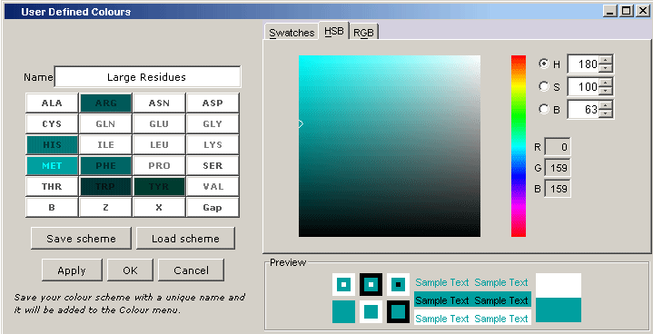

User Defined Colours

You may define any number of new colour schemes, each with a unique name.
Each of the residues in a new colour scheme may be assigned a new user defined
colour.
Click "Apply" or "OK" to set your new colours on the active
alignment window.
Click "Cancel" to undo your changes if you pressed the "Apply"
button.
If you save your colour scheme with a unique name the colour scheme name will
be added to the "Colour" menu on each new alignment window.
Any saved colour schemes will be automatically loaded the next time you use
Jalview.